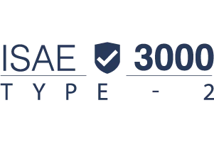

Home · Security and quality
Sensitive papers.Independently protected.
Councils keep sensitive, and sometimes highly sensitive, information in Qualigraf. That's why security, quality and continuity sit at the heart of how we build and run it, and why independent auditors check them.



What's certified, attested and built in.
| ISO 27001 | Certified | Information security measures in place, independently verified through regular audits. |
|---|---|---|
| ISO 27002 | Implemented | The security controls behind the certification. |
| Cyber Essentials | Certified | Essential controls against common cyber threats. |
| ISAE 3000 Type 2 | Attested | Independent assurance over our non financial controls. |
| ISO 9001 | Certified | Development, management and service delivery that are well organised and continuously improved. |
| ISO 16175 | Compliant | Records management functionality you can rely on. |
| GDPR | Compliant | Personal data handled within the law. |
| WCAG 2.1 AA | Accessible | Usable by residents and staff, whatever their needs. |
| Audit trail | Built in | Who did what, and when, on every file. |
Three commitments
Security
Your data is stored securely and stays easy for your organisation to reach whenever you need it. Compliance is checked through regular independent audits.
Quality
Predictable quality and planning, clear agreements on ways of working and documentation, and a consistent way of handling changes, incidents and feedback.
Continuity
Continuous access to your data and our services is part of the commitment, even when the pressure's on around decisions and publication.
A public recordhas to last.
Metadata and archiving standards are built into Qualigraf, for structured disclosure and long term digital preservation, and set up for UK records management and open government practice.
A complaints procedure you'll hopefully never need.
If you're unhappy with any part of our service, our complaints procedure makes sure it's handled promptly and carefully.
Bring yourhardest meeting.We'll run it on Qualigraf.
A walkthrough built around your own committee cycle, your deadlines, your approval routes and your Members. We set it up around a real meeting of yours, from report to published minutes.